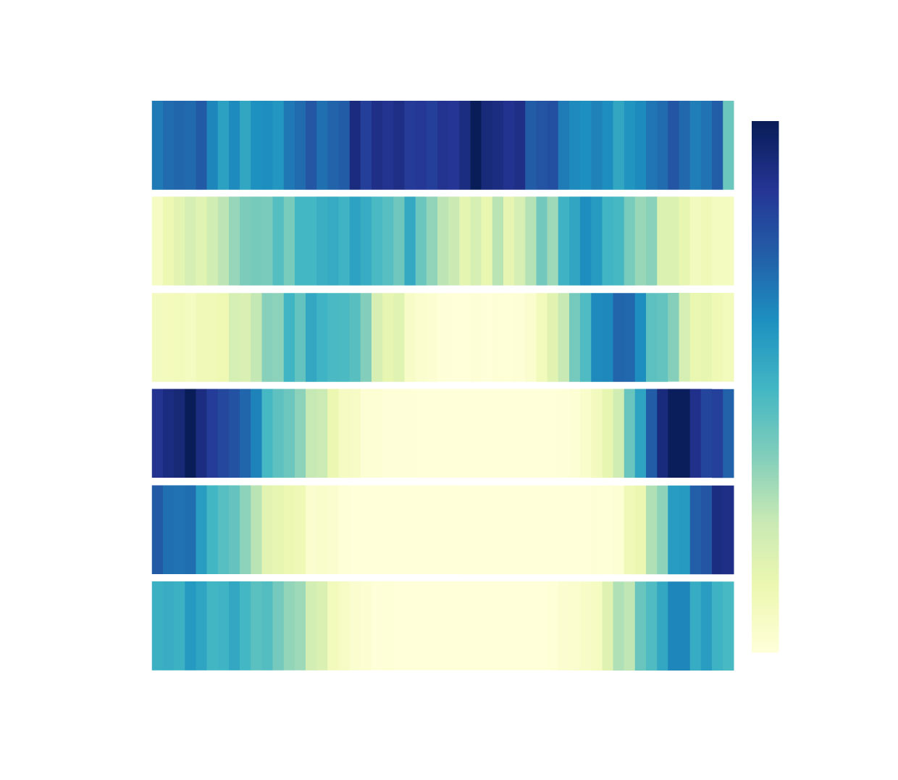
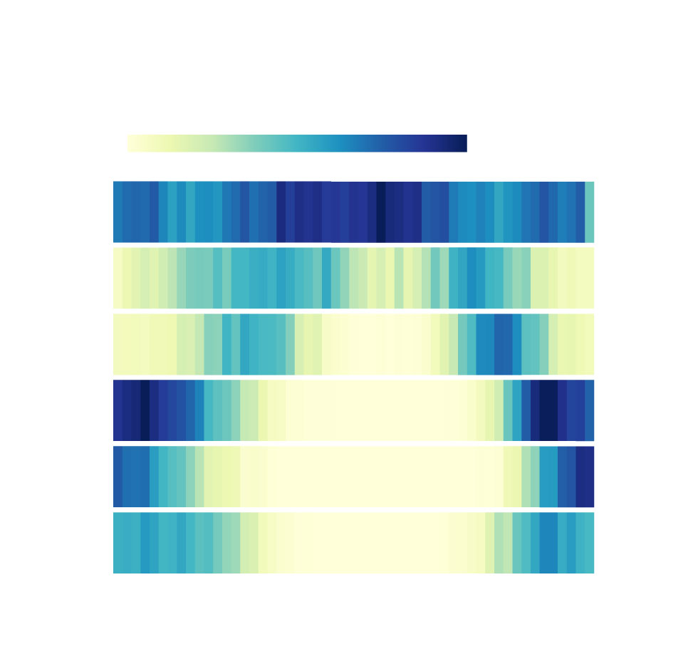

By now, everyone knows that people are leaving San Francisco in droves. It’s pricey AF, the tech bros are insufferable, and there’s poop everywhere. What, some have begun to ask, is left to stay for?
I’ll tell you what. The running.
As someone who’s recently left San Francisco for New York after living there his entire adult life, I can tell you personally: we who go running do not know how good we have it. And the reason is nothing less than our lame, milquetoast weather.
Skeptical? Try this: fly to New York in May (when I moved) and go for a run. I dare you. Try not to be, as I was, gobsmacked by lung-bursting amounts of moisture-laden hot air. Your splits will suffer. You will shun any incline. You will want to die. And that’s before summer has even started.
Don’t take my word for it. Instead, allow me to marshal science to make all of you active Bay Areans who would leave think twice. I started my inquiry with a simple question-- how good is the weather for running in SF, and how does that compare to other cities that San Franciscans move to?
I’m glad you asked, too.
Which cities do people leave SF for?
I could have done this analysis myself, but the good capitalists at Trulia did it for me. Their methods weren’t perfect (see the methodology if you’re a big nerd), but here are the top 5:
- New York
- Las Vegas
- Phoenix
- Dallas
- Seattle
In other words: suck it, Austin.
And what does it mean for running weather to be “good?”
Surely this is subjective, you say? Wrong! The intrepid reporters at Elite Daily have determined that the optimal temperature for running long-distance is 49-50 F, and for sprinting it’s 72-73 F. Since all runs are, by definition, somewhere between a sprint and long-distance run, we’ll call those our bookends and include all temperatures in between.
But also: running in the rain sucks (chafing, anyone?), so we’ll want to take that into account too.
So to sum up, good running days are:
- Those with high temps between 50 and 72.5.
- Those with no rain recorded.
So how do the cities compare?
Again, so glad you asked. I pulled 39 years of temperature and precipitation records from the NOAA, and determined on average how many days per month in each city have high temperatures in that sweet spot range, and also feature no rain. And the results are in:
Guess what - San Francisco wins
It gets more than double the number of running days as the others.
Source: National Oceanic and Atmospheric Administration (ncdc.noaa.gov)
But that doesn’t help us see when the weather is good for running. This does:

San Francisco Has Good Running Weather Year-Round
In the cities people leave it for, things are seasonal at best
% of days good
for running

SF Has Good Running Weather Year-Round
In the cities people leave it for, things are seasonal at best
% of days good
for running

SF Has Good Running Weather
Year-Round
In the cities people leave it for, things are seasonal
at best
% of days good
for running
Basically:
- SF has pretty great running weather year round.
- Seattle and New York are temperate, with bad running weather in the winter and the summer. The shoulder seasons are pretty okay-- but they’re longer in Seattle, giving Seattle a distinct edge over NYC.
- Vegas, Phoenix, and Dallas have terrible summers. Their winters are actually great for running, though-- particularly in Vegas.
So we should plan the rest of our lives based on this data?
No, no you should not. Why? Climate change.
Comparing just the last 19 years (2001-2019) with the previous 20 (1981-2000), the cities have diverged even further.
West Coast cities have seen big seasonal shifts
Other cities are losing running days on the margins.
Source: National Oceanic and Atmospheric Administration (ncdc.noaa.gov)
But that's not the whole story. Just because Seattle has roughly the same number of running days doesn’t mean that its running days happen at the same time as before.
San Francisco has gotten a lot better for running
The other cities are mostly getting worse.
Source: National Oceanic and Atmospheric Administration (ncdc.noaa.gov)
In Seattle, for example, the number of good running days hasn’t changed, but their distribution has. Seattle has more good running weather in the winter months, but markedly less in the summer and fall.
But SF is better basically all the time.
Why is SF so much better now?
Part of the answer is the same stuff that’s happening everywhere-- warming winters (and in SF’s case, somewhat less rainy ones) means better weather for outdoor activity.
But the biggest reason SF is improving on running days is more surprising: since 2000, the number of days that are too warm for running has actually declined-- and in a big way.
San Francisco has fewer extremely warm days.
Even if average temperatures are going up, fewer days exceed 72.5 degrees now compared to before.
Source: National Oceanic and Atmospheric Administration (ncdc.noaa.gov)
It’s another reminder that climate change has both its winners and losers: in San Francisco, like maybe not that many other places in the world, the winners are runners-- and the losers are people who like to do things like stand outside relaxing, barbequing, and generally not being too active under a warm summer sun. In other words, normal summer stuff -- which for now, San Franciscans aren’t getting any more of.
So if you hate the cost of living and like to lay about during the summer, by all means leave. But if you’re one of the many who like to be outside, wafted by a bracing Pacific breeze-- you can’t do much better than stay.